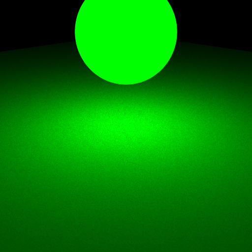

**Homework 3 - Monte Carlo Ray Tracing**
Student Name: Di Zhuang
Legi Number: 21958772
(Note: please read the [supplementary](#supplementary) section first before working on this report.)
# Part 1: Light Sampling
## Integrator Implementation
**Time spent on this task:**
15 min
**Describe your implementation of `direct_ems`.**
First, we look for the intersection point of the camera ray with the scene. If there's no intersection point, then return zero.
Next, we check whether the intersecting mesh is an emitter. If yes, we add the radiance of the emitter at the intersection point to the return value.
Finally, we sample a point on the emitter. We check whether the shadow ray from the intersection point to the sampled point on the emitter intersects any other mesh in the scene.
If yes, then the ray is occuluded, so we return zero. Otherwise, we compute and return the integrand given in the instruction.
Note that we multiply the evaluated radiance at the intersection point by the number of emitters `n_lights` because we are sampling a random emitter from the scene and this scaled the original pdf by `1/n_lights`.
## Shape Area Light
**Time spent on this task:**
15 min
**Describe your implementation of `AreaEmitter::eval(...)`.**
If the dot product between $w_i$ and the norm at the sampled point of the emitter is positive, then it is a blackface. We return zero.
Otherwise, we return the radiance of the emitter at the sampled point.
**Describe your implementation of `AreaEmitter::pdf(...)` and `AreaEmitter::sample(...)`.**
`AreaEmitter::pdf(...)`
If a blackface is encountered, return zero. Otherwise, convert the pdf of surface sampling to the pdf of solid angle sampling and return the result.
`AreaEmitter::sample(...)`
Sample a point on the surface of the emitter and set `lRec.p`, `lRec.n`, `lRec.wi`, `lRec.shadowRay` and `lRec.pdf` accordingly. If the pdf is positive,
return the value of the emitter at the sampled point divided by the pdf. Otherwise, return zero. Note that we discard the sample if the corresponding
pdf is not greater than 0.
## Validation
**Comparison: sphere/sphere_pointlights_ems**
**Comparison: sphere/sphere_ems**

**Comparison: sphere/sphere_mesh_ems**
**Comparison: sphere/sphere2_ems**
**Comparison: sphere/sphere2_mesh_ems**
**Comparison: odyssey_ems**
**Comparison: veach_ems**
# Part 2: BRDF Sampling
## Integrator Implementation
**Time spent on this task:**
30 min
**Describe your implementation of `direct_mats`.**
The implementation is similar to `direct_ems` except that now we are sampling point on the emitter by sampling `wo`
in the BRDF. We then construct the shadow ray in the direction of `wo` and check the intersection. If the intersection exists
and the intersecting point is on an emitter, we evaluate the value of `Li` at the intersecting point. As a result,
we return `Le + BRDF * Li`. Note that since the cosine foreshortening term is included in the sampling of BRDF, we do not
need to multiply it again in the return value.
## Microfacet BRDF
**Time spent on this task:**
45 min
**Describe your implementation of `Microfacet::eval(...)`.**
We compute the BRDF value according to the given formula.
**Describe your implementation of `Microfacet::sample(...)`.**
First, we need to determine which lobe we are sampling from. In my implementation, I used `_sample[0]`. If `_sample[0]` is smaller than `m_ks`,
we do specular sampling. Otherwise, we do diffuse sampling. To make sure that all points in the corresponding distribution are uniformly sampled,
we scale `_sample[0]` using the corresponding proportion. That is, in the first case, we use the sampled point `(_sample[0] / m_ks, _sample[1])`
for sampling; in the latter case, we use `((_sample[0] - m_ks) / (1.f - m_ks), _sample[1])`. In the end, we check that our sampled `wo` is not on
the dark side. If yes, we return 0. Otherwise, we return the evaluated value times the cosine foreshortening term divided by the pdf by definition.
Note that we discard the sample if the corresponding pdf is not greater than 0.
## Validation
**Comparison: sphere/sphere_mats**
**Comparison: sphere/sphere2_mats**
**Comparison: odyssey_mats**
**Comparison: veach_mats**
# Part 3: Multiple Importance Sampling
## Integrator Implementation
**Time spent on this task:**
120 min
**Describe your implementation of `direct_mis`.**
As with `direct_ems` and `direct_mats`, we first find the intersection of camera ray in the scene. If the intersection point is on an emitter, we add the radiance of the emitter evaluated at that point
to our result.
**Sample BRDF**: Given the sampled `brdf`, `wo` with pdf `pdf_mat(wo)`, we find the intersection of the shadow ray with any emitters. If there is no intersection or if the first intersection is not emitter, we add
0 to our result. Otherwise, we evaluate the radiance `Li_mat` of the intersecting emitter at the intersection point `p`. We then compute 'pdf_em(p)', which is the pdf of sampling `p` on the
intersecting emitter, and the weight `w_em = pdf_mat(wo) / (pdf_mat(wo) + pdf_em(p))`. Finally, we add `w_em * Li_mat * brdf` to our result. Note that if `pdf_mat(wo) + pdf_em(p)` is too small, we discard the
sample as small denominator could bring high variance.
**Sample Emitter**: Given the sampled `Li_em`, `p`, `wi` with pdf `pdf_em(p)`, we create the corresponding BSDF query and evaluate the `brdf` at `p`.
Then we compute the corresponding pdf_mat(wi) and the weight `w_mat = pdf_em(p) / (pdf_em(p) + pdf_mat(wi))`.
Finally, we add `w_mat * Li_em * brdf * n_lights * cosTheta` to our result, where `n_lights` is the number of lights and `cosTheta` is the cos foreshortening term.
Note that if `pdf_mat(wo) + pdf_em(p)` is too small, we discard the sample as small denominator could bring high variance.
## Validation
**Comparison: odyssey_mis**
**Comparison: veach_mis**
# Part 4: Four-way Comparison
**Odyssey**
**Veach**
# Feedback
**Use this section to provide feedback about this assignment (each task, the handout, Nori, etc.). We appreciate your opinions to help improve future homeworks and projects.**
...
# Supplementary
* For each task, please note down the time you spent working through it and use at least a few sentences to describe your implementation. If applicable, also report the problems you encounter (e.g. whether or how it's solved, what is the difficult part).
* Please let us know to what extent your code is working (e.g. you only managed to work through part of this assignment, or your solution doesn't operate as expected in some corner cases). We encourage you to share your thinking process, and points will be granted based on your description even if the code is not 100% functioning.
* Nori generates both EXR and PNG format output. Please use PNG for image comparison in the report.
* This report template uses [Markdeep](https://casual-effects.com/markdeep/), which supports Markdown syntax in HTML file. For example usage, please refer to the [official demo document](https://casual-effects.com/markdeep/features.md.html).
* LaTeX is also supported for typing mathematical formulas:
$$
L_o(\mathbf{x}, \omega_o) = \int_{\Omega} L_i(\mathbf{x},\omega_i)\, f(\mathbf{x}, \omega_i, \omega_o)\, |\cos\theta_i|\, \mathrm{d}\omega_i
$$